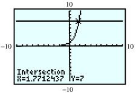

Subsection Introduction
In this section, we introduce a new mathematical tool called a logarithm, which will help us solve exponential equations.
Suppose that a colony of bacteria doubles in size every day. If the colony starts with
\(50\) bacteria, how long will it be before there are
\(800\) bacteria? We answered questions of this type in
Section4.2 by writing and solving an exponential equation. The function
\begin{equation*}
P(t) = 50 \cdot 2^t
\end{equation*}
gives the number of bacteria present on day \(t\text{,}\) so we must solve the equation
\begin{equation*}
800 = 50 \cdot 2^t
\end{equation*}
Dividing both sides by 50 yields
\begin{equation*}
16 = 2^t
\end{equation*}
The solution of this equation is the answer to the following question:
To what power must we raise \(2\) in order to get \(16\text{?}\)
The value of \(t\) that solves the equation is called the base \(2\) logarithm of \(16\text{.}\) Because \(2^4 = 16\text{,}\) the base \(2\) logarithm of \(16\) is \(4\text{.}\) We write this as
\begin{equation*}
\log_{2}16 = 4
\end{equation*}
In other words, we solve an exponential equation by computing a logarithm. You can check that \(t = \alert{4}\) solves the problem stated above:
\begin{equation*}
P(\alert{4}) = 50 \cdot 2^{\alert{4}}= 800
\end{equation*}
Thus, the unknown exponent is called a logarithm. In general, for positive values of \(b\) and \(x\text{,}\) we make the following definition.
Definition of Logarithm.
For \(b\gt 0, b\ne 1\text{,}\) the base \(b\) logarithm of \(x\), written \(\log_{b} x\text{,}\) is the exponent to which \(b\) must be raised in order to yield \(x\text{.}\)
Some logarithms, like some square roots, are easy to evaluate, while others require a calculator. We will start with the easy ones.
Example 4.50.
Compute the logarithms.
\(\displaystyle \log_3 9\)
\(\displaystyle \log_5 125 \)
\(\displaystyle \log_4 \dfrac{1}{16}\)
\(\displaystyle \log_5 \sqrt{5}\)
Solution.
To evaluate \(\log_3 9\text{,}\) we ask what exponent on base \(3\) will produce \(9\text{.}\) Or, 3 to what power equals 9? The exponent we need is \(\alert{2}\text{,}\) so
\begin{equation*}
\log_3 9 = \alert{2} ~~~ \text{because} ~~~ 3^{\alert{2}} = 9
\end{equation*}
We use similar reasoning to compute the other logarithms.
\(\displaystyle \log_5{125} = \alert{3}~~ \text{ because } ~~5^{\alert{3}} = 125\)
\(\displaystyle \log_4{\dfrac{1}{16}}= \alert{-2} ~~\text{ because } ~~4^{\alert{-2}} = \dfrac{1}{16}\)
\(\displaystyle \log_5{\sqrt{5}} = \alert{\dfrac{1}{2}}~~ \text{ because }~~ 5^{\alert{1/2}} =\sqrt{5}\)
Checkpoint 4.51. Practice 1.
Checkpoint 4.52. QuickCheck 1.
From the definition of a logarithm and the examples above, we see that the following two statements are equivalent.
Logarithms and Exponents: Conversion Equations.
If \(b \gt 0\text{,}\) \(b\ne 1\text{,}\) and \(x \gt 0\text{,}\)
\begin{equation*}
\blert{y = \log_b x}~~~ \text{ if and only if }~~~ \blert{ x = b^y}
\end{equation*}
In other words, the logarithm, \(y\text{,}\) is the same as the exponent in \(x = b^y\text{.}\) We see again that a logarithm is an exponent; it is the exponent to which \(b\) must be raised to yield \(x\text{.}\)
These equations allow us to convert from logarithmic to exponential form, or vice versa. You should memorize the conversion equations, because we will use them frequently.
As special cases of the equivalence in (1), we can compute the following useful logarithms. For any base \(b \gt 0, b\ne 1\text{,}\)
Some Useful Logarithms.
\begin{equation*}
\begin{aligned}[t]
\log_b b \amp = 1~~~ \text{ because } ~~~b^1 = b \\
\log_b 1 \amp = 0 ~~~ \text{ because } ~~~b^0 = 1 \\
\log_b{b^x} \amp = x~~~ \text{ because } ~~~b^x = b^x
\end{aligned}
\end{equation*}
Example 4.53.
\(\displaystyle \log_{2}{2} = 1\)
\(\displaystyle \log_{5}{1} = 0\)
\(\displaystyle \log_{3}{3^4} = 4\)
Checkpoint 4.54. Practice 2.
Checkpoint 4.55. QuickCheck 2.
Subsection Using the Conversion Equations
We use logarithms to solve exponential equations, just as we use square roots to solve quadratic equations. Consider the two equations
\begin{equation*}
x^2 = 25 ~~~~ \text{ and } ~~~~ 2^x = 8
\end{equation*}
We solve the first equation by taking a square root, and we solve the second equation by computing a logarithm:
\begin{equation*}
x = \pm\sqrt{25} = \pm 5 ~~~~ \text{ and } ~~~~ x = \log_{2}{8} = 3
\end{equation*}
The operation of taking a base \(b\) logarithm is the inverse operation for raising the base \(b\) to a power, just as extracting square roots is the inverse of squaring a number.
Every exponential equation can be rewritten in logarithmic form by using the conversion equations. Thus,
\begin{equation*}
3 = \log_{2}{8}~~~~ \text{ and }~~~~ 8 = 2^3
\end{equation*}
are equivalent statements, just as
\begin{equation*}
5 = \sqrt{25}~~~~ \text{ and }~~~~ 25 = 5^2
\end{equation*}
are equivalent statements. Rewriting an equation in logarithmic form is a basic strategy for finding its solution.
Checkpoint 4.56. QuickCheck 3.
Example 4.57.
Rewrite each equation in logarithmic form.
Checkpoint 4.58. Practice 3.
Checkpoint 4.59. Pause and Reflect.
Subsection Approximating Logarithms
Suppose we would like to solve the equation
\begin{equation*}
2^x = 26
\end{equation*}
The solution of this equation is \(x = \log_{2}{26}\text{,}\) but can we find a decimal approximation for this value? There is no integer power of \(2\) that equals \(26\text{,}\) because
\begin{equation*}
\begin{aligned}[t]
2^4 \amp = 16 \\
\text{and }~~~~ 2^5 \amp = 32
\end{aligned}
\end{equation*}
Thus, \(\log_{2}{26}\) must be between \(4\) and \(5\text{.}\) We can use trial and error to find the value of \(\log_{2}{26}\) to the nearest tenth. Use your calculator to make a table of values for \(y = 2^x\text{,}\) starting with \(x = 4\) and using increments of \(0.1\text{.}\)
| \(x\) |
\(2^x\) |
|
\(x\) |
\(2^x\) |
| \(4\) |
\(2^4=16\) |
|
\(4.5\) |
\(2^{4.5}=22.627\) |
| \(4.1\) |
\(2^{4.1}=17.148\) |
|
\(4.6\) |
\(2^{4.6}=24.251\) |
| \(4.2\) |
\(2^{4.2}=18.379\) |
|
\(\alert{4.7}\) |
\(2^{\alert{4.7}}=25.992\) |
| \(4.3\) |
\(2^{4.3}=19.698\) |
|
\(\alert{4.8}\) |
\(2^{\alert{4.8}}=27.858\) |
| \(4.4\) |
\(2^{4.4}=21.112\) |
|
\(4.9\) |
\(2^{4.9}=29.857\) |
From the table we see that \(26\) is between \(2^{4.7}\) and \(2^{4.8}\text{,}\) and is closer to \(2^{4.7}\text{.}\) To the nearest tenth, \(\log_{2}{26} \approx 4.7\text{.}\)
Trial and error can be a time-consuming process. In Example 4, we illustrate a graphical method for estimating the value of a logarithm.
Example 4.60.
Approximate \(\log_{3}{7}\) to the nearest hundredth.
Solution.
If \(\log_{3}{7}=x\text{,}\) then \(3^x = 7\text{.}\) We will use the graph of \(y = 3^x\) to approximate a solution to \(3^x = 7\text{.}\)
We graph \(Y_1 =3\)^ X and \(Y_2 = 7\) in the standard window (ZOOM 6) to obtain the graph shown below. Next we activate the intersect feature to find that the two graphs intersect at the point \((1.7712437, 7)\text{.}\) Because this point lies on the graph of \(y = 3^x\) , we know that
\begin{equation*}
3^{1.7712437} \approx 7~~~\text{, or }~~~ \log_{3}{7} \approx 1.7712437
\end{equation*}
To the nearest hundredth, \(\log_{3}{7} \approx 1.77\text{.}\)

Checkpoint 4.61. Practice 4.
Subsection Base 10 Logarithms
Some logarithms are used so frequently in applications that their values are programmed into scientific and graphing calculators. These are the base \(10\) logarithms, such as
\begin{equation*}
\log_{10}{1000} = 3 ~~~\text{ and }~~~ \log_{10}{0.01} = -2
\end{equation*}
Base \(10\) logarithms are called common logarithms, and the subscript \(10\) is often omitted, so that \(\log x\) is understood to mean \(\log_{10}{x}\text{.}\)
Checkpoint 4.62. QuickCheck 4.
To evaluate a base \(10\) logarithm, we use the LOG key on a calculator. Many logarithms are irrational numbers, and the calculator gives as many digits as its display allows. We can then round off to the desired accuracy.
Example 4.63.
Approximate the following logarithms to \(2\) decimal places.
\(\displaystyle \log{6.5}\)
\(\displaystyle \log{256}\)
Solution.
-
The keying sequence LOG \(6.5\) )ENTER produces the display
| \(\log {(6.5)}\) |
\(\) |
\(\) |
| \(\) |
\(\) |
\(.812913566\) |
so \(\log {6.5}\approx 0.81\text{.}\)
The keying sequence LOG \(256\) ) ENTER yields \(2.408239965\text{,}\) so \(\log {256} \approx 2.41\text{.}\)
Checkpoint 4.65. Practice 5.
Checkpoint 4.66. Pause and Reflect.
Subsection Solving Exponential Equations
We can now solve any exponential equation with base \(10\text{.}\) For instance, to solve the equation
\begin{equation*}
16 \cdot 10^t = 360\text{,}
\end{equation*}
we first divide both sides by \(16\) to obtain
\begin{equation*}
10^t = 22.5
\end{equation*}
Then we convert the equation to logarithmic form and evaluate:
\begin{equation*}
t = \log_{10}{22.5} \approx 1.352182518
\end{equation*}
To \(4\) decimal places, the solution is \(1.3522\text{.}\)
To solve exponential equations involving powers of 10, we can use the following steps.
Steps for Solving Base 10 Exponential Equations.
Isolate the power on one side of the equation.
Rewrite the equation in logarithmic form.
Use a calculator, if necessary, to evaluate the logarithm.
Solve for the variable.
Example 4.67.
Solve the equation \(~~38 = 95 - 15 \cdot 10^{0.4x}\)
Solution.
First, we isolate the power of \(10\text{:}\) We subtract \(95\) from both sides of the equation and divide by \(-15\) to obtain
\begin{equation*}
\begin{aligned}[t]
-57 \amp = -15 \cdot 10^{0.4x} \amp\amp \blert{\text{Divide by }-15.} \\
3.8 \amp = 10^{0.4x}
\end{aligned}
\end{equation*}
Next, we convert the equation to logarithmic form as
\begin{equation*}
\log_{10}{3.8} = 0.4x
\end{equation*}
Solving for \(x\) yields
\begin{equation*}
\frac{\log_{10}{3.8}}{0.4}= x
\end{equation*}
We can evaluate this expression on the calculator by entering
LOG \(3.8\) ) \(0.4\) ENTER
which yields \(1.449458992\text{.}\) Thus, to four decimal places, \(x \approx 1.4495\text{.}\)
Checkpoint 4.69. QuickCheck 5.
Checkpoint 4.70. Practice 6.